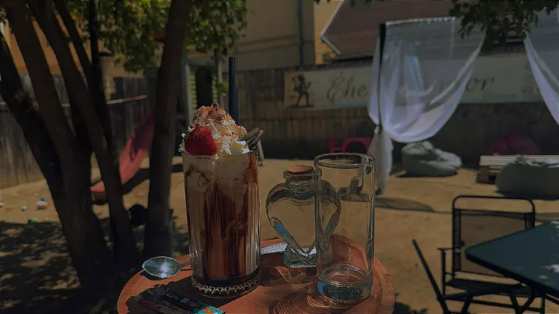

Fotó: malacsütéside a Vándor saját fotója kerül
Malacsütés
Nyárson, parázs fölött, lassan sütve.
Főoldal / Programok
Programok · Élőzene · AsztalfoglalásÉlőzene minden pénteken, tematikus bulik, meccsközvetítés, és a nagy ősz végi esemény: a Márton-napi libavacsora.
Élőzene egész este — Ambrus Balázs, Tarkó Nimród és vendégeik. Jó időben a teraszon, hűvösebb estéken fent, az étteremben. Asztalfoglalás ajánlott.
Következő: —
Asztalt foglalok péntekreNyárson, parázs fölött, lassan sütve.
Teraszmegnyitó és nyári esték, amikor „felrobban a terasz”.

A nagy meccsek, a VB is — közösen, a Vándorban.
Péntek esti zenéhez, születésnapra, vagy a Márton-napi vacsorához, ahol a foglalás kötelező.
Ez egy látványterv: a foglalás most nem ment el sehova. Élesben az étterem kapná meg, a vendég pedig ezt az SMS-t.